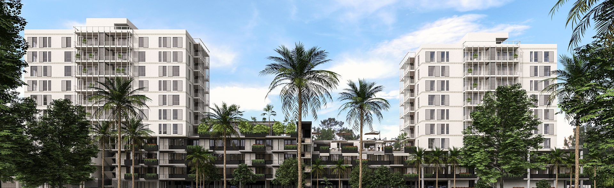
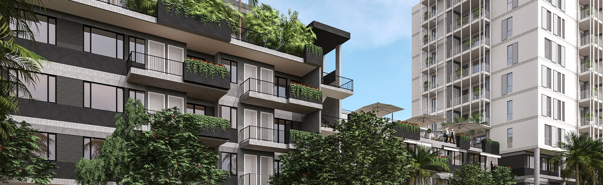

El objetivo principal es brindar a las familias paraguayas la oportunidad de adquirir
fácilmente su primera vivienda a través de un modelo que permite financiación del 100%,
empezando a pagar a partir del momento en que se entregue el departamento.
SIN CUOTA INICIAL y con todos los gastos adheridos al crédito fiduciario.
La financiación cuenta con la protección y aval de:
con todos los requisitos exigidos por el banco financiador, quién analizará la viabilidad del mismo.

el cual Incluye todos los gastos de escrituración, fianza en garantía, gastos fiduciarios y gastos financieros.
antes de ese día, no es necesario realizar ningún tipo de pago al fideicomiso.
El modelo FIPAV esta compuesto por varios actores:
El modelo está estructurado por la sociedad Re-Aseguradora AMTRUST, a través de un Patrimonio Autónomo, que gestiona el banco. El patrimonio Autónomo es creado en la Entidad Fiduciaria.